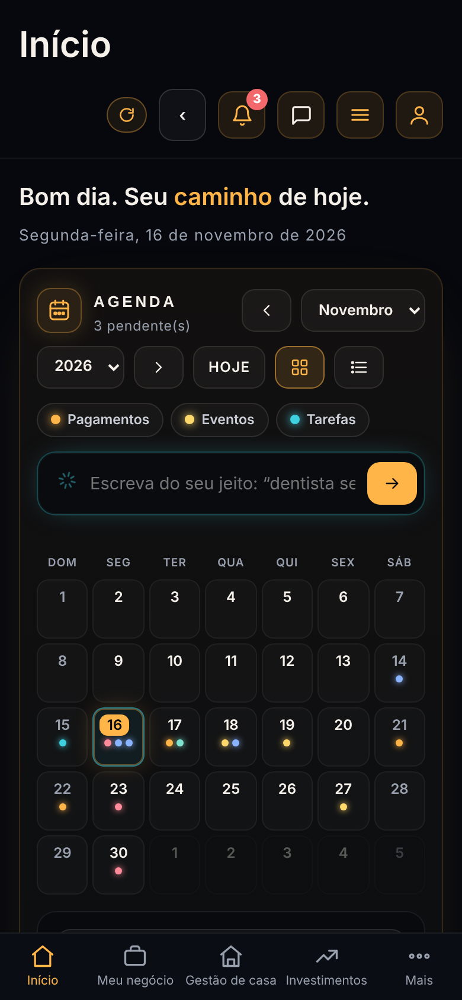

O Início agora abre na sua agenda do dia — com tudo o que vence, acontece ou precisa ser feito.
Meu negócio, Gestão de casa, Investimentos, CRM, Marketing e Ferramentas abrem as ferramentas de cada área. Conta: entrar, sair e cuidar dos seus dados. APP DOWNLOAD instala o app e MANUAL DO USUÁRIO baixa este guia em PDF. O botão ☰ no topo abre o menu (no computador, mostra ou esconde a coluna do menu).
Com a conta aberta aparece no topo o selo ● LOGADO. Ao lado dele fica o botão ↻ ATUALIZAR: ele envia o que estiver pendente e recarrega a página — útil no iPhone, onde não dá para puxar a tela para atualizar.

Com a conta aberta, tudo o que você salva vai para a nuvem sozinho. Lançou no celular, aparece no computador (e vice-versa). Sem internet, o app guarda no aparelho e envia quando a conexão voltar.